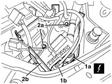
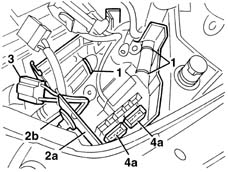

5505A29 container of supplementary junction unit in engine bay - r r with supplementary junction unit removed
- Path
- Procedures > 55 ELECTRICAL EQUIPMENT > 5505 ELECTRICAL CIRCUIT FOR INSTRUMENTS/INDICATORS > 5505A multi-function components > 5505A29 container of supplementary junction unit in engine bay - r r with supplementary junction unit removed
- Kind
- repair procedure (removal / refitting; the operation number is the code)
- Applies to
- all engines; all production periods
- Interactive page
- https://sloeber94.github.io/elrnDB-lYpsln/en/#/2429365
Applies to: all engines; all production periods
 Removing
Removing
 Refitting
Refitting5505A13 supplementary junction control unit in engine bay - r r
1. Disconnect the electrical connections (1a, 1b).
 | Name | Connector |
|---|---|---|
1a | Front / engine coupling |
| Name | Connector |
|---|---|---|
1b | Front / engine coupling |
2. Undo the bolts (2a) of control unit container (2b).

Applies to: all engines; all production periods
1. Cut the wiring retaining collars.
2. Move container (2a) slightly to one side and release removable pad (2b).
3. Extract the electrical container from the control unit container.
4. Remove container (2a) after undoing the electrical connections (4a).

Applies to: all engines; all production periods
Refitting
RemovingCheck that the additional junction unit container is not damaged.
Position the container after doing up the electrical connections.
Insert the electrical connection in the container and do up the removable block.
Position the wiring and secure it using the bands.
Position the container and secure it using the bolts.
Connect the electrical connections .
5505A13 supplementary junction control unit in engine bay - r r
Topics linked from this page (3)
- 5505A13 supplementary junction control unit in engine bay - r r
- D4A Front / engine coupling ( ENGINE )
- D4B Front / engine coupling ( ENGINE )